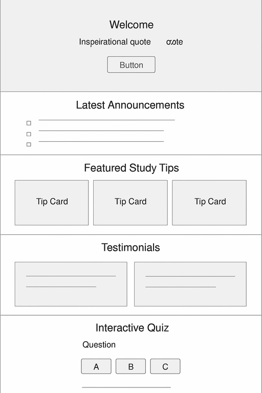
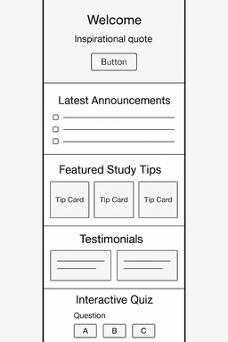

Site Name
Student Life Resource Toolkit - An helpful resource for students to stay organized, manage their time effectively, and improve productivity by providing practical academic tools and helpful resources.
Site Purpose
This site will help online students:
- Get Access to Practical and Resourceful Tools
- Stay Organized
- Manage Time Effectively
- Improve and Maintain Productivity
Scenarios
Visitors might ask 🤔:
- How can I organize my assignments and tasks in one place?
- What tools can help me manage my study time more effectively?
- Where can I find useful study tips and academic resources?
Color Schema
- Primary Blue (#1E3A8A): Headings and navigation
- Light Blue (#38BDF8): Accents and highlights
- Light Gray (#F9FAFB): Page background
- Dark Gray (#111827): Body text
Typography
- Lato: Headings
- Open Sans: Body text
Wireframe
Desktop Version
Mobile version
